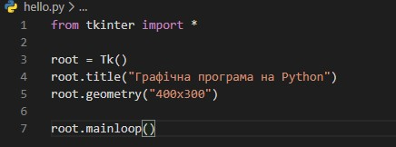
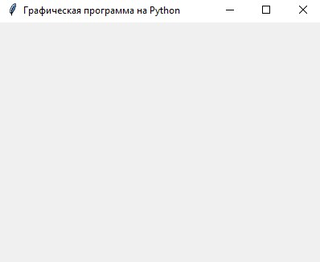
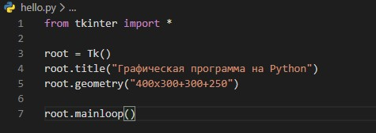

From the Firehose
Створення графічного інтерфейсу Trinter. Створення вікна додатку.
Багато програм на сьогоднішній день використовують графічний інтерфейс, який більш інтуїтивний і зручний для користувача, ніж консоль. І за допомогою мови програмування Python також можна створювати графічні програми. Для цього в Python за замовчуванням застосовується спеціальний тулкіт - набір компонентів, який називається tkinter.
Тулкіт tkinter доступний у вигляді окремого вбудованого модуля, який містить всі необхідні графічні компоненти - кнопки, текстові поля і т.д.
Базовим моментом в побудові графічних програм є створення вікна. Потім у вікно додаються всі інші компоненти графічного інтерфейсу. Тому створимо спочатку найпростіше вікно. Для цього визначимо наступний скрипт:
Для створення графічного вікна застосовується конструктор Tk (), який визначений в модулі tkinter. Створюване вікно присвоюється змінної root, і через цю змінну ми можемо управляти атрибутами вікна. Зокрема, за допомогою методу title () можна встановити заголовок вікна.
За допомогою методу geometry () - розмір вікна. Щоб установити тривалість в метод geometry () передається рядок у форматі "Ширина x Висота". Якщо при створенні вікна програми метод geometry () не викликається, то вікно займає той простір, який необхідно для розміщення внутрішнього вмісту.
Для відображення вікна треба викликати у нього метод mainloop () , який запускає цикл обробки подій вікна для взаємодії з користувачем.
В результаті при запуску скрипта ми побачимо таке пусте віконце:
Початкова позиція вікна
За замовчуванням вікно позиціонується в верхній лівий кут екрану. Але ми можемо змінити його положення, передавши потрібні значення в метод geometry ():
Тепер рядок в методі geometry має такий вигляд: "Ширина x Висота + коордінатаX + коордінатаY". Тобто при запуску вікно буде перебувати на 300 пікселів вправо і на 250 пікселів вниз від верхнього лівого кута екрана.